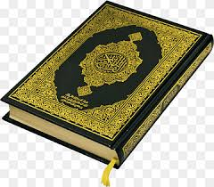

<-- MY BOOKS -->
ALLAH IS ONE
The Holy Quran is my favorite book.
ALLAH was sent this book to his Prophet Muhammad صلی اللہ علیہ واسلم ).
This book is very important.
All Muslims are reading many times in a day, for example- When a day is before starting recite the Holy Quran in the Fajir of the “SALAH”.
After Fajir of“SALAH” many Muslim people are reading the Holy Quran in a daily routine.
Many people are reciting the Holy Quran in which the chapter of “Surah-e- Yaseen” every person of the Muslims.
They are thinking, if we are reciting the Surah-e-yaseen, our day is starting the better then.
All most, Many Muslim people are daily routine in one chapter recite of the Quran, it is the none Hafiz-e-Quran but the Hafiz-e-Quran is reciting three chapter of the Holy Quran.
After the Maghrib of the “SALAH”, We are reciting the Holy Quran of Surah-e- Waqia. This surah is fore of the “RIZQ OF TANGI” And the barkt of the rizq.
After the Isha “SALAH” many Muslim people are the reciting the Holy Quran in which the Surah-e-Mulk . THIS Surah is the save/safety Grave of azab.
All most, many people are reciting the Holy Quran in which Ayat-ul- kursi before the sleep.
This ayat is the many benefits. for example, safety of the mall, house. and many benefits.
Many Muslims people are kissing the book of the Holy Quran before reciting ,we are loved his book.
GOOGLE
HOLY QURAN

BOLD
Italic
underlined